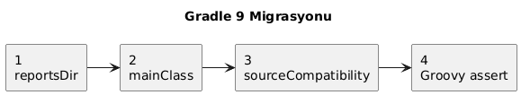
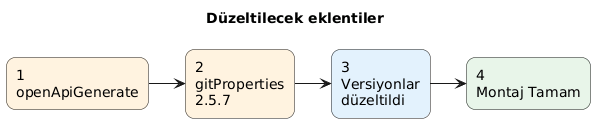
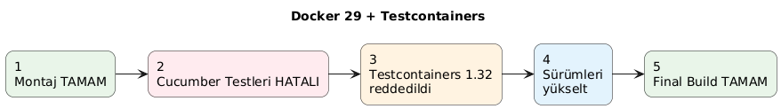
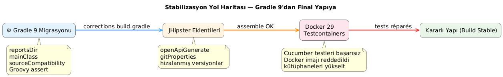
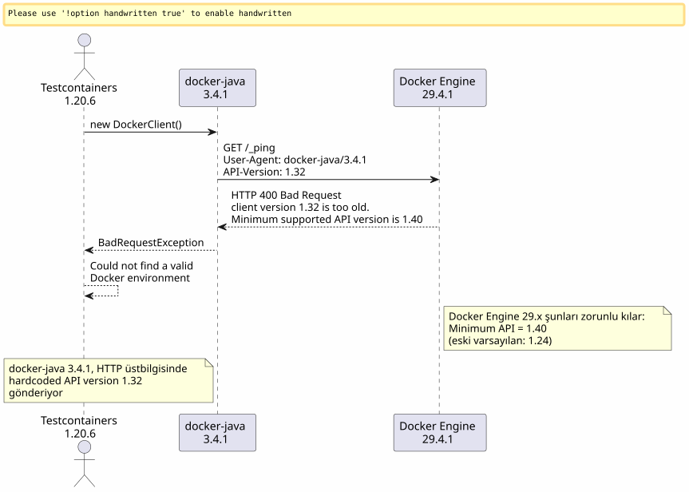
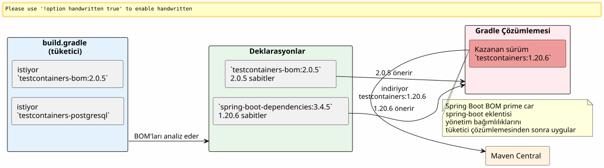
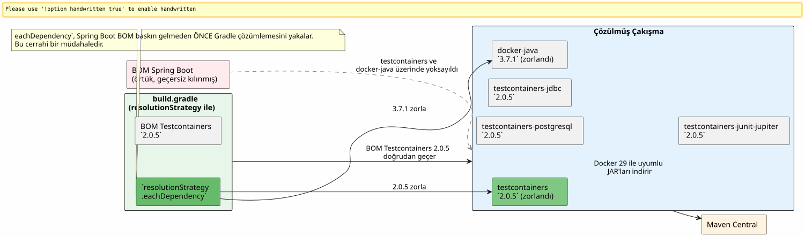

Gradle 9, Docker 29 ve Testcontainers birbirine girdiğinde: bir JHipster build'inin hata ayıklaması
Yayınlandı: 25 April 2026
- Senaryo: bir JHipster projesi, artık yüklenmeyen bir build
- Hata 1:
reportsDirhayalet değişkeni - Hata 2:
main = "…"Gradle 9 altında artık mevcut değil - Hata 3:
sourceCompatibilityartık bir proje özelliği değil - Hata 4: üç operandlı Groovy assertion’ı
- Hata 5:
compileKotlin→openApiGenerateörtük bağımlılığı - Hata 6:
generateGitProperties,FilterOutputStream.write()üzerinde çöküyor - Son olarak: Testcontainers sahneye çıkıyor
- Aşama 1: docker-java yolu
- Aşama 2: web araması ve GitHub ekmek kırıntıları
- Aşama 3: yeniden adlandırılmış artefaktların tuzağı
- Aşama 4: çözünürlüğü zorla
- Final sonuç
- Düzeltmeler özet tablosu
- Sonuç
Daha önce basit bir… anını yaşadınız mı?`./gradlew build`günde yüz kez çalıştırdığınız şey aniden daha önce hiç görülmemiş bir hata verip çökmeye mi başladı? Bunu ardı ardına gelen on bir hatayla çarpın, üzerine bolca Docker Engine 29 uyumsuzluğu ekleyin ve on yıldır kullandığımız API’leri yok eden Gradle 9 ile süsleyin. İşte eksiksiz seyir defteri.
Hedef: uyumsuzluklar serisini göstermek.

Hedef: bozuk eklentileri izole etmek.

Hedef: runtime problemi.

bunu göz önünde bulundurmanın başka bir yolu

Senaryo: bir JHipster projesi, artık yüklenmeyen bir build
Proje`edster`2024 yılında oluşturulmuş bir JHipster uygulamasıdır. Kök build script’i`build.gradle`aylarca sabit kaldı. Sonra versiyon yükseltmeye karar verdik:
Bileşen |
Hedef sürüm |
Gradle |
9.4.1 |
Java |
21.0.11-tem (Eclipse Temurin) |
JHipster |
8.x (framework`tech.jhipster:jhipster-framework:8.11.0`) |
Spring Boot |
3.4.5 |
Kotlin |
2.3.0 |
Docker Engine |
29.4.1 (API 1.54) |
Java sürüm değişikliği SDKMAN üzerinden yapılır:
sdk use java 21.0.11-temİlk başlatma:
$ ./gradlew build --no-daemon
FAILURE: Build failed with an exception.
* Where:
Build file '/home/.../edster/build.gradle' line: 18
* What went wrong:
An exception occurred applying plugin request [id: 'jhipster.cucumber-conventions']
> Failed to apply plugin 'jhipster.cucumber-conventions'.
> Could not create task ':cucumberTest'.
> Could not create task ':consoleLauncherTest'.
> Could not set unknown property 'reportsDir' for task ':consoleLauncherTest'Build script yüklemesinden bile öteye geçemiyoruz. Sorun şurada:`buildSrc/src/main/groovy/jhipster.cucumber-conventions.gradle`Lütfen çevrilecek metni sağlayın.
Hata 1: reportsDir hayalet değişkeni
Betik`jhipster.cucumber-conventions.gradle`içerir:
tasks.register('consoleLauncherTest', JavaExec) {
dependsOn(testClasses)
String cucumberReportsDir = file("$buildDir/reports/tests")
outputs.dir(reportsDir) // <-- reportsDir n'existe PAS
classpath = sourceSets["test"].runtimeClasspath
main = "org.junit.platform.console.ConsoleLauncher"
// ...
}Tanımlanan değişken`cucumberReportsDir`. Kullanılan ise`reportsDir`-- hiçbir yerde tanımlanmamış olan.
DüzeltmeLütfen çevrilecek metni girin.outputs.dir(cucumberReportsDir)
Hata 2: main = "…" Gradle 9 altında artık mevcut değil
Hemen hatırlatma:
Could not set unknown property 'main' for task ':consoleLauncherTest' of type org.gradle.api.tasks.JavaExec.Gradle 9 şu özelliği kaldırıyor`main`yararına`mainClass`görevler üzerine`JavaExec`Lütfen çevrilecek metni sağlayın.
DüzeltmeLütfen çevrilecek metni sağlayın.mainClass = "org.junit.platform.console.ConsoleLauncher"
Hata 3: sourceCompatibility artık bir proje özelliği değil
Yeni hata:
Could not set unknown property 'sourceCompatibility' for root project 'edster' of type org.gradle.api.Project.Kök betik şunlara sahipti:
sourceCompatibility=17
targetCompatibility=17Gradle 9, kök düzeydeki bu özellikleri kaldırır. Bunlar bir blok içinde yer almalıdır`java`Lütfen çevrilecek metni sağlayın.
DüzeltmeLütfen çevrilecek metni sağlayın.
java {
sourceCompatibility = JavaVersion.VERSION_21
targetCompatibility = JavaVersion.VERSION_21
}Hata 4: üç operandlı Groovy assertion’ı
Eski betik şunları içeriyordu:
assert System.properties["java.specification.version"] == "17" || "21" || "24"Groovy’de,"21" et "24"`truthy string’lerdir. İfade şuna çözümlenir:(… == "17") || true || true`, ki her zaman doğrudur — ancak sözdizimi, istenen kesin doğrulama için geçersizdir.
DüzeltmeLütfen çevrilecek metni sağlayın.
assert System.properties["java.specification.version"] in ["17", "21", "23", "24"]Hata 5: compileKotlin → openApiGenerate örtük bağımlılığı
Build ilerliyor. Kotlin derlemesi başarılı. Ardından:
Task ':compileKotlin' uses this output of task ':openApiGenerate'
without declaring an explicit or implicit dependency.Gradle 9, görevler arasındaki örtük bağımlılıkları reddeder. Mademki`compileKotlin`tarafından oluşturulan kaynakları okur`openApiGenerate`, bağlantıyı beyan etmek gerekir.
Düzeltmeiçinde`build.gradle`Lütfen çevrilecek metni giriniz.
afterEvaluate {
tasks.named("compileKotlin").configure {
dependsOn(tasks.named("openApiGenerate"))
}
}Le `afterEvaluate`gereklidir çünkü`openApiGenerate`bir uzantıdır (OpenAPI Generator eklentisi) ve yapılandırma aşamasında doğrudan erişilebilen bir görev değildir.
Hata 6: generateGitProperties, FilterOutputStream.write() üzerinde çöküyor
Java derlemesi başarılı. Kaynaklar işleniyor. Ardından:
> Task :generateGitProperties FAILED
No signature of method: java.io.FilterOutputStream.write() is applicable for argument types: (Integer) values: [103]Eklenti`gradle-git-properties`versiyon 2.5.0, Java 21 / Gradle 9 ile uyumsuzdur. Dahili bir hata şunu çağırmaya çalışıyor`write(int)`kapatan bir akış üzerinden Groovy aracılığıyla.
Düzeltmeiçinde`gradle.properties`Lütfen çevrilecek metni sağlayın.
gitPropertiesPluginVersion=2.5.7Son olarak: Testcontainers sahneye çıkıyor
Şimdiye kadar bu tamamen bir "build script debugging" işlemiydi. Her hata, build script’lerindeki bir Gradle 9 veya Java 21 uyumsuzluğuydu. Yukarıdaki altı düzeltmeden sonra, le`./gradlew assemble`başarıyla tamamlandı.
Ama`./gradlew build`testleri de çalıştırır ve Cucumber testleri, geçici bir PostgreSQL başlatmak için Testcontainers kullanır.
Could not find a valid Docker environment.
EnvironmentAndSystemPropertyClientProviderStrategy: failed with exception BadRequestException
(Status 400: {"message":"client version 1.32 is too old. Minimum supported API version is 1.40"}
UnixSocketClientProviderStrategy: failed with exception BadRequestException
(Status 400: {"message":"client version 1.32 is too old. Minimum supported API version is 1.40"}Testcontainers, Docker ile iletişim kuramıyor. İki farklı strateji (ortam değişkenleri + Unix soketi) aynı hata ile başarısız oluyor.

Aşama 1: docker-java yolu
İlk refleks: Testcontainers tarafından kullanılan Docker Java istemcisi API sürümünü gönderir`1.32`HTTP el sıkışmasında, ancak Docker Engine 29.4.1 minimum şunları gerektiriyor:`1.40`Sorun daemon tarafında değil, istemci tarafındadır.
Testcontainers 1.20.6 tarafından çözümlenen docker-java sürümünün doğrulanması:
$ ./gradlew dependencies --configuration testRuntimeClasspath | grep docker-java
+--- com.github.docker-java:docker-java-api:3.4.1
+--- com.github.docker-java:docker-java-transport:3.4.1Testcontainers 1.20.6’den gelen docker-java 3.4.1. docker-java’nın son genel sürümü 3.5.1’dir. Sürüm yükseltmeyi şununla zorlamayı deneyelim:`resolutionStrategy`blokta`configurations` de `build.gradle`Lütfen çevrilecek metni sağlayın.
configurations {
all {
resolutionStrategy.eachDependency { details ->
if (details.requested.group == "com.github.docker-java"
&& details.requested.name.startsWith("docker-java")) {
details.useVersion("3.5.1")
}
}
}
}Build yeniden başlatılıyor. Aynı hata:`client version 1.32 is too old`Lütfen çevrilecek metni sağlayın.
Gradle önbellek doğrulaması: JAR dosyaları başarıyla yeniden indirildi ancak hata devam ediyor. docker-java 3.5.1 hâlâ gönderiyor`1.32`. Bu sürüm Docker Engine 29.4.1 için YETERLİ değildir.
Arındırma işlemi: sadece emin olmak için Gradle önbelleğini tamamen temizleyin:
rm -rf ~/.gradle/caches
rm -rf /path/to/project/.gradleTemizleme sonrası tam yeniden başlatma. Aynı hata.
Aşama 2: web araması ve GitHub ekmek kırıntıları
docker-java 3.5.1` yetersiz. Geriye sadece birinin tam olarak bu sorunla karşılaşıp karşılaşmadığını araştırmak kaldı.
testcontainers-java` ve docker-java sorunları üzerinde hedeflenmiş araştırma:
site:github.com/testcontainers "client version 1.32 is too old"
site:github.com/docker-java "client version 1.32" Docker Engine 29İlk anlık sonuçlar:
-
testcontainers-java#11210—
[Bug]: client version 1.32 is too old. Minimum supported API version is 1.44 -
testcontainers-java#11212—
[Bug]: Docker 29.0.0 could not find a valid Docker environment -
testcontainers-java#11491—
[Bug]: Incompatibility in Ubuntu Github runners with Docker Engine 29.1.*
Yol haritası net: Docker Engine 29.x, minimum API sürümünü şuna yükseltti:`1.24`(eski hata) -e/a`1.40`. Testcontainers 1.20.x, API sürümünü göndererek müzakere eden docker-java 3.4.x kullanır`1.32`. Daemon nazikçe ama kesin bir şekilde reddeder.
#11491 numaralı issue’da, bir bakıcı şöyle yanıtlıyor:
Lütfen çevrilecek metni sağlayın. Merhaba, GH runner üzerinde engine 29.1 ile çalışan ve 2.0.3 versiyonuna sahip bir projem var ve sorunsuz çalışıyor. Lütfen hepiniz herhangi bir versiyon çakışması olup olmadığını kontrol edebilir misiniz? Lütfen, tüm modüllerin şununla ön eklenmiş olduğunu unutmayın:`testcontainers-Lütfen çevrilecek metni sağlayın. Yani, 2.x versiyonuyla birlikte şuna geçtik`postgresql to testcontainers-postgresql Lütfen çevrilecek metni sağlayın.
Bu yanıt şunları içeririki kritik bilgiLütfen çevrilecek metni sağlayın.
-
Testcontainers 2.0.3+ sorunu çözer
-
Modüllertestcontainers-` ön ekiyle yeniden adlandırılmış
Aşama 3: yeniden adlandırılmış artefaktların tuzağı
Yeniden adlandırma serttir. Testcontainers 2.x’te, eski isimlerin hiçbiri artık bu isim altında çalışmıyor:
Eski ad (1.x) |
Yeni ad (2.x) |
|
|
|
|
|
|
|
değişmedi |
İlk deneme: Testcontainers 2.0.5 BOM’unu ve yeni artifact isimlerini şuraya uygula:`build.gradle`Lütfen çevrilecek metni sağlayın.
dependencies {
testImplementation platform("org.testcontainers:testcontainers-bom:2.0.5")
testImplementation "org.testcontainers:testcontainers-postgresql"
testImplementation "org.testcontainers:testcontainers-jdbc"
testImplementation "org.testcontainers:testcontainers-junit-jupiter"
testImplementation "org.testcontainers:testcontainers"
}./gradlew build
FAILURE: Could not find org.testcontainers:jdbc:2.0.5.
Could not find org.testcontainers:junit-jupiter:2.0.5.testcontainers-bom` BOM’u yeterli değil.Neden? Çünkü Spring Boot 3.4.5 kendi bağımlılık yönetim BOM’unu sunar (spring-boot-dependencies) kikazanırgeçişli çözümlemedeki Testcontainers BOM’u üzerinde. Spring Boot düzeltiyor`testcontainers` à 1.20.6, ve dolayısıyla Spring Boot BOM’unda açıkça yer almayan tüm artefaktlar (yeni olanlar gibi`testcontainers-*) eski isimlere çözümlenir`1.20.6-- ki bu versiyonda artık mevcut değil.
İncelediğinde`dependencies --configuration testRuntimeClasspath`, şunlar bulunur:
+--- org.testcontainers:testcontainers -> 1.20.6 (*)
| \--- org.testcontainers:testcontainers:2.0.5 -> 1.20.6Le `→`ikameyi belirtir: Testcontainers 2.0.5 istendi, ancak Spring Boot zorluyor`1.20.6`Lütfen çevrilecek metni sağlayın.

Aşama 4: çözünürlüğü zorla
Strateji iki yönlü hale geliyor:
-
docker-java’yı 3.7.1 versiyonuna zorlayın (Docker Engine 29 ile uyumlu olduğu test edilmiştir)
-
Spring Boot BOM’unu devre dışı bırakarak Testcontainers core sürümünü 2.0.5’e zorla

Son düzeltmeiçinde`build.gradle`Lütfen çevrilecek metni giriniz.
configurations {
all {
resolutionStrategy.eachDependency { details ->
if (details.requested.group == "com.github.docker-java"
&& details.requested.name.startsWith("docker-java")) {
details.useVersion("3.7.1")
}
if (details.requested.group == "org.testcontainers"
&& details.requested.name == "testcontainers") {
details.useVersion("2.0.5")
}
}
}
}
dependencies {
testImplementation platform("org.testcontainers:testcontainers-bom:2.0.5")
testImplementation "org.testcontainers:testcontainers-jdbc"
testImplementation "org.testcontainers:testcontainers-junit-jupiter"
testImplementation "org.testcontainers:testcontainers-postgresql"
testImplementation "org.testcontainers:testcontainers"
// ... autres dépendances Spring Boot
}Le resolutionStrategy.eachDependency`BOM’u geçersiz kılmanın tek yoludur`spring-boot-dependencies`Spring Boot eklentisi tarafından yönetilir. Şunun üzerindeki eşitlik testi`details.requested.name == "testcontainers"`kasten kısıtlayıcıdır: yalnızca `core modülü zorunlu kılınır. Modüller`testcontainers-*`açıkça belirttiğimiz Testcontainers 2.0.5 BOM’unu takip ederler.
Final sonuç
$ ./gradlew build --no-daemon
> Task :consoleLauncherTest
[2 containers found]
[2 containers started]
[2 containers successful]
BUILD SUCCESSFUL in 1m 16sTestcontainers 2.0.5 + docker-java 3.7.1, nihayet Docker Engine 29.4.1 üzerinden PostgreSQL konteynerlerini oluşturmayı başarıyor. Nihai iş hatası (Cucumber testindeki HTTP 500), build script’ten tamamen bağımsız bir uygulama sorunudur.
Düzeltmeler özet tablosu
Profesyonel bir çevirmensiniz. Fransızca’dan Türkçe’ye çevirin.
TÜM ters tırnak kod aralıklarını ( |
Dosya |
Sorun |
Düzeltme |
1 |
|
Değişken`reportsDir`olmayan |
|
2 |
|
`main`Gradle 9 kullanımdan kaldırıldı |
|
3 |
|
`sourceCompatibility`Gradle 9 üst düzey yasak |
Blok`java { sourceCompatibility = JavaVersion.VERSION_21 }` |
4 |
|
Sözdizimsel olarak geçersiz Groovy onaması |
|
5 |
|
Örtük bağımlılık`compileKotlin`Profesyonel bir çevirmensiniz. Fransızca’dan Türkçe’ye çevirin.
TÜM ters tırnaklı kod aralıklarını ( |
|
6 |
|
`gitPropertiesPluginVersion`uyumsuz Java 21 |
|
7 |
Gradle’ı Önbelleğe Al |
docker-java 3.5.1 test edildi, çözüldü ancak yetersiz |
Temizleme + docker-java 3.7.1 geçişi |
8 |
|
Testcontainers 1.20.6, Docker Engine 29 ile uyumsuz |
Testcontainers 2.0.5 + prefix zorlaması`testcontainers-*`+ resolutionStrategy ve Spring Boot BOM |
Sonuç
JHipster/Gradle build’unuz Gradle 9 + Docker Engine 29 sürüm yükseltmesinden sonra hata veriyorsa, hatalar iki kategoriye ayrılır:
Build script hataları(ilk 6’sı): Gradle 9, yıllardır çalışan bazı özellikleri ve sözdizimlerini kaldırıyor (sourceCompatibility=, main =, reportsDir). Yeni API bilindikten sonra bunlar mekanik migrasyonlardır.
Docker çalışma zamanı hataları(son 2 tanesi): Docker Engine 29.4.1, < 1.40 olan API istemcilerini reddediyor. Testcontainers 1.20.6 (Spring Boot 3.4.5 tarafından zorunlu kılınan), 1.32 gönderen docker-java 3.4.1’i kullanıyor. Sorunu yalnızca Testcontainers 2.0.5 + docker-java 3.7.1, artifact’lerin yeniden adlandırılması ve şu şekilde versiyon zorlaması ile çözüyor:`resolutionStrategy.eachDependency`Spring Boot’un örtük BOM’unu atlatmanın tek yolu olarak.
Proje kökündeki Gradle build script’i artık temiz.`./gradlew build`Java 21, Gradle 9.4.1, Spring Boot 3.4.5 ve Docker Engine 29.4.1 sürümüne geçiyor.